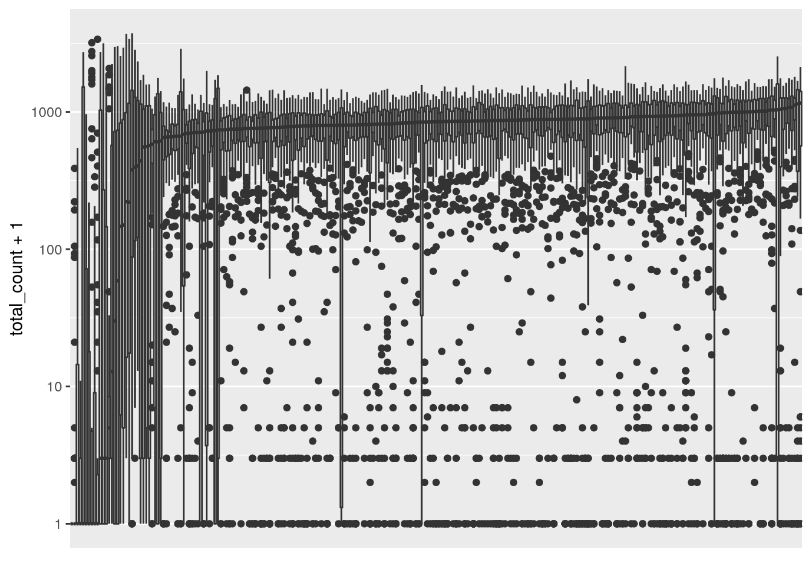
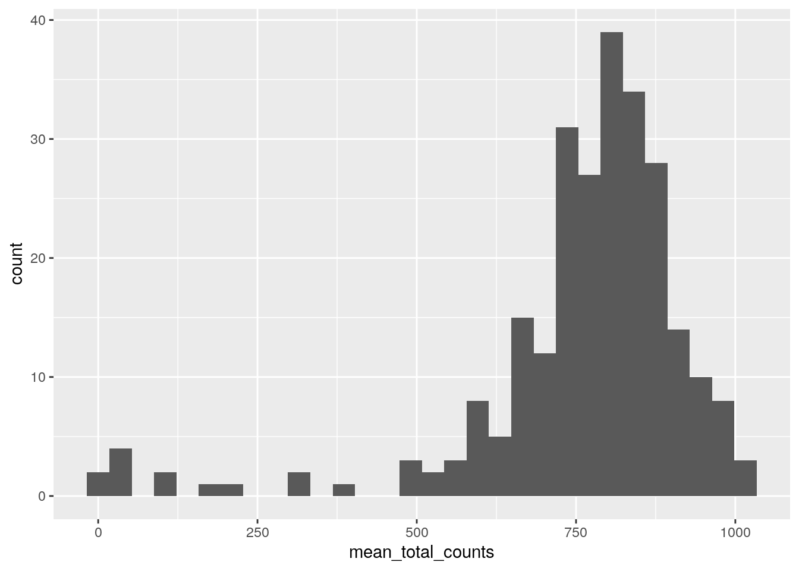
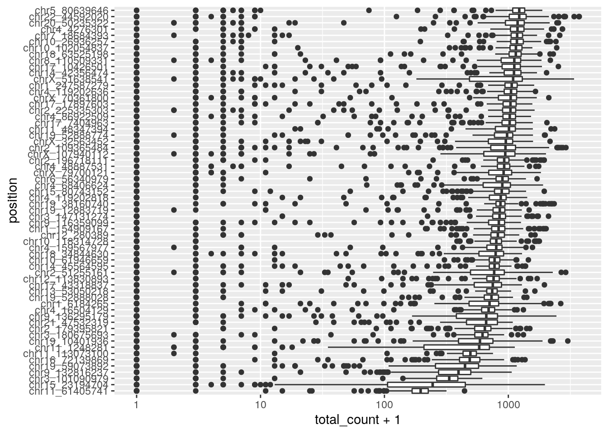
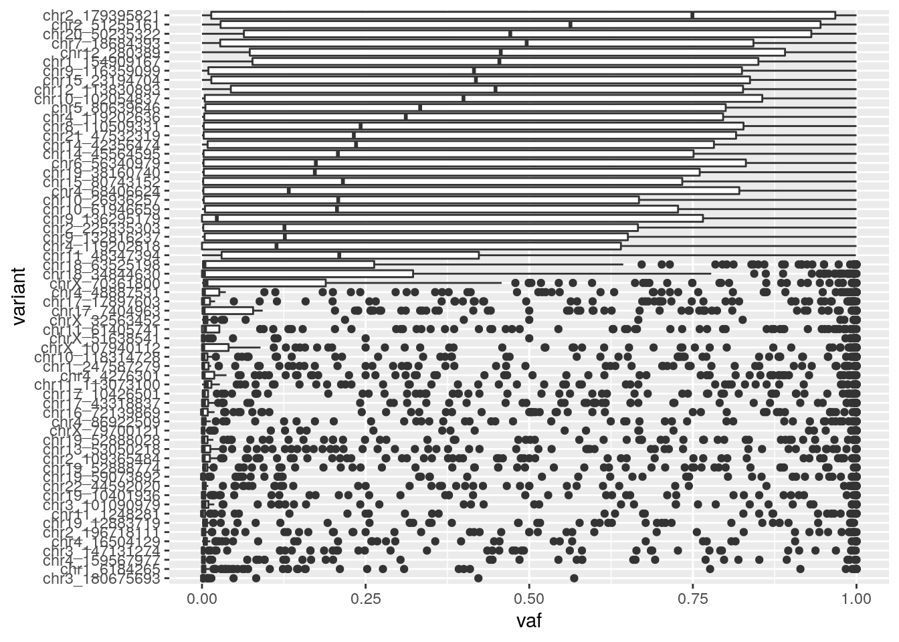
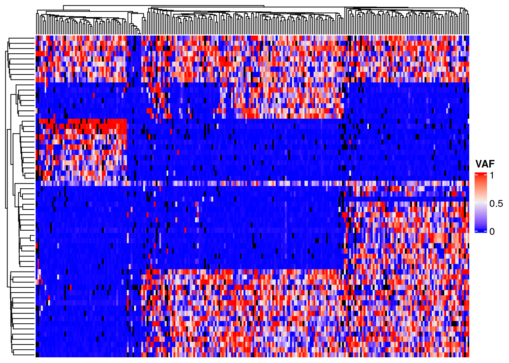
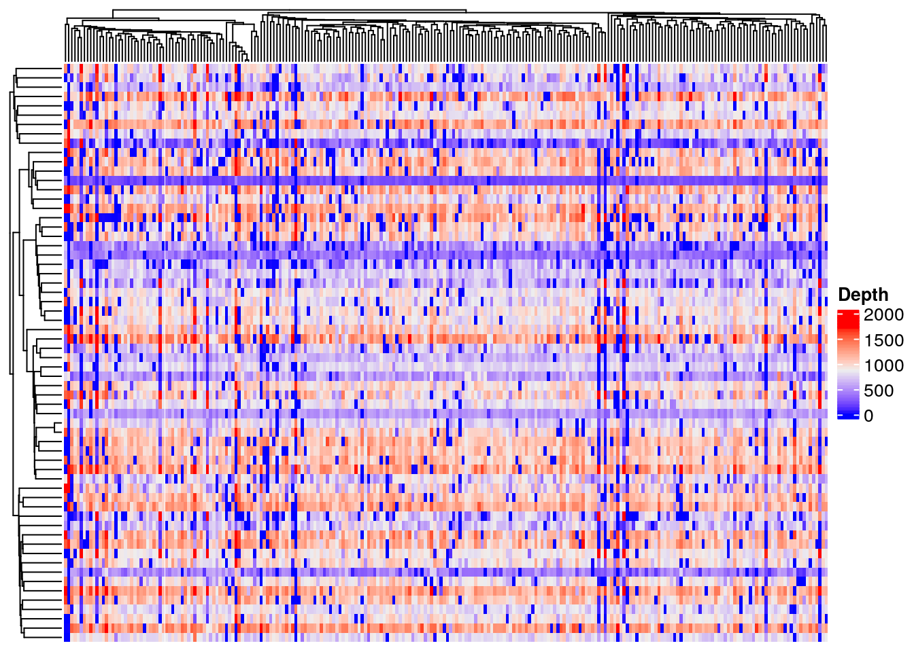
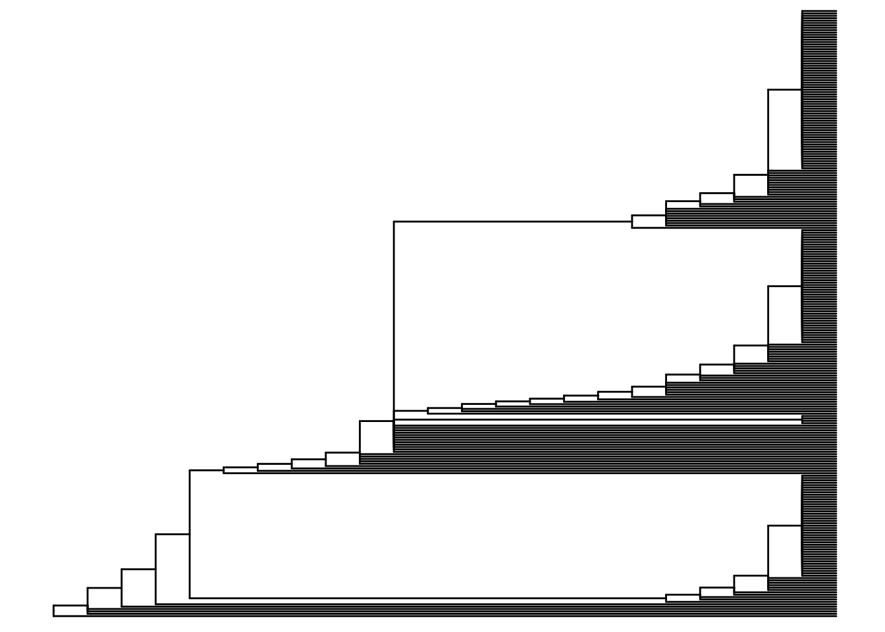
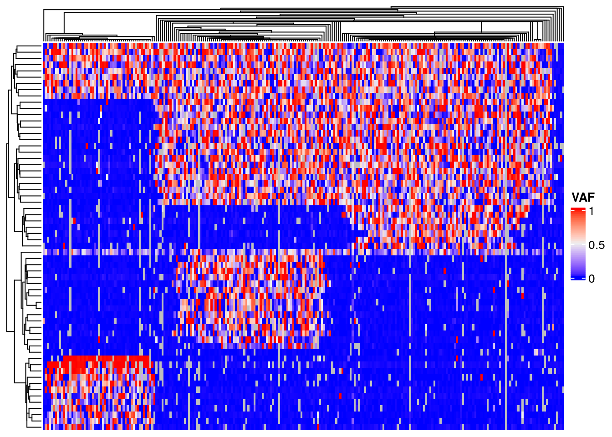

Chapter 3 Targeted SNV Sequencing of an ALL Sample
3.1 Introduction
In this tutorial we will analyze targeted single cell sequencing data from a patient with Acute Lymphoblastic Leukemia. The data was generated as part of a study of six ALL patients (see Gawad et al.). The data we will analyze corresponds to “Patient 3” from that paper. The data was also reanalyzed by Singer et al. to showcase their novel phylogenetic method SCIPhI. We have used pipelines provided alongside the SCIPhI code to generate a table of mutation data and a predicted phylogenetic tree.
3.2 Load the required packages
This tutorial will rely heavily on the tidyverse packages including ggplot2. Heatmap plotting will use ComplexHeatmap.
3.3 Read the data
The SCIPhI pipeline produced an mpileup. We have further processed this data using samtools and bcftools to produce a multi-sample VCF. The VCF can be read into a dataframe using the vcfR package. We will read the vcf, then extract the total read count and variant read counts (DP and DV in the vcf). We will put the data into ‘tidy’ format and merge.
## Scanning file to determine attributes.
## File attributes:
## meta lines: 118
## header_line: 119
## variant count: 62
## column count: 264
##
Meta line 118 read in.
## All meta lines processed.
## gt matrix initialized.
## Character matrix gt created.
## Character matrix gt rows: 62
## Character matrix gt cols: 264
## skip: 0
## nrows: 62
## row_num: 0
##
Processed variant: 62
## All variants processedtotal_count <- extract.gt(vcf, element = 'DP', as.numeric = TRUE) %>%
as_tibble(rownames='position') %>%
pivot_longer(!position, names_to = "cell_id", values_to = "total_count")
variant_count <- extract.gt(vcf, element = 'DV', as.numeric = TRUE) %>%
as_tibble(rownames='position') %>%
pivot_longer(!position, names_to = "cell_id", values_to = "variant_count")
read_counts <- full_join(total_count, variant_count)## Joining, by = c("position", "cell_id")| position | cell_id | total_count | variant_count |
|---|---|---|---|
| chr1_6184265 | Patient_3_Cell_S10 | 280 | 0 |
| chr1_6184265 | Patient_3_Cell_S100 | 917 | 1 |
| chr1_6184265 | Patient_3_Cell_S101 | 1056 | 3 |
| chr1_6184265 | Patient_3_Cell_S102 | 579 | 1 |
| chr1_6184265 | Patient_3_Cell_S103 | 134 | 0 |
| chr1_6184265 | Patient_3_Cell_S104 | 872 | 0 |
3.4 Data QC
Poor performing cells will have consistently low depth (total read count) across all positions. Plot a boxplot of log transformed total read count, ordering by mean total read count for readability.
ggplot(read_counts, aes(x=reorder(cell_id, total_count+1, FUN = median), y=total_count+1)) +
geom_boxplot() + scale_y_continuous(trans='log10') +
scale_x_discrete(labels = NULL, breaks = NULL) + labs(x = "")
The left side of the plot show several poor quality cells. A plot of mean total read count confirms there are outlier cells. Filter these cells using a threshold of 400 mean total read count.
mean_total_counts <- read_counts %>%
group_by(cell_id) %>%
summarise(
mean_total_counts = mean(total_count)
)
ggplot(mean_total_counts) +
geom_histogram(aes(x=mean_total_counts), bins=30)
filtered_read_counts <- read_counts %>%
inner_join(
mean_total_counts %>%
filter(mean_total_counts > 400))## Joining, by = "cell_id"Identify poor performing variant positions characterized by low depth across all cells. A caveat to this plot is that low total depth may be caused by copy number change. Most variants appear to perform well in this dataset.
ggplot(filtered_read_counts, aes(y=reorder(position, total_count+1, FUN = median), x=total_count+1)) +
geom_boxplot() + scale_x_continuous(trans='log10') + ylab("position")
Identify consistently low vaf variant positions likely to not exist at all in the cell population.
filtered_read_counts %>%
mutate(vaf = (variant_count) / (total_count)) %>%
replace_na(list(vaf=0)) %>%
ggplot(aes(y=reorder(position, vaf, FUN = mean), x=vaf)) +
geom_boxplot() + ylab("variant")
3.5 Heatmap plots
Heatmap plots of a matrix of cell by variant data will show how cells cluster into subpopulations, and variants cluster by their shared evolutionary history. Convert the filtered read counts to a matrix of variant allele frequency. Black denotes cells with no data, instances where we failed to sequence reads for a variant in the given cell. Note the block structure due to the clonal populations with shared variants. However, also note that within each block there is a considerable amount of noise with many variants having a lower than expected VAF. This is very likely the results of allelic dropout.
Note there appears to be a poor quality position at chr11_48347394, in the middle of the heatmap.
mat <- filtered_read_counts %>%
mutate(vaf = variant_count / total_count) %>%
dplyr::select(c("position", "cell_id", "vaf")) %>%
pivot_wider(names_from=cell_id, values_from=vaf) %>%
column_to_rownames("position") %>%
as.matrix()
row_hr <- hclust(dist(mat), method = "average")
row_hr = as.dendrogram(row_hr)
column_hr <- hclust(dist(t(mat)), method = "average")
column_hr = as.dendrogram(column_hr)
ComplexHeatmap::Heatmap(
mat,
name="VAF",
cluster_rows=row_hr,
cluster_columns=column_hr,
na_col="black",
show_row_names=FALSE,
show_column_names=FALSE,
)
It can be instructive to also plot total read count as this gives an approximate estimate of total copy number. Try to identify the variants in regions of low copy number that are also homozygous (VAF 1) as determined from the plot above.
mat <- filtered_read_counts %>%
dplyr::select(c("position", "cell_id", "total_count")) %>%
pivot_wider(names_from=cell_id, values_from=total_count) %>%
column_to_rownames("position") %>%
as.matrix()
ComplexHeatmap::Heatmap(
mat,
name="Depth",
cluster_rows=row_hr,
cluster_columns=column_hr,
na_col="black",
show_row_names=FALSE,
show_column_names=FALSE,
)## The automatically generated colors map from the 1^st and 99^th of the values in the matrix. There are outliers
## in the matrix whose patterns might be hidden by this color mapping. You can manually set the color to `col`
## argument.
##
## Use `suppressMessages()` to turn off this message.
3.6 SCIΦ Phylogeny
SCIΦ is a method for jointly calling mutations in individual cells and estimating the phylogeny relating those cells. The method uses MCMC sampling to genotype mutations and predict a tree and is robust to high drop-out and missing data. The input to SCIΦ is an mpileup file produced by samtools. SCIΦ has been run for you on the Patient 3 data. The output os a tree in dot format, a vcf of mutation genotypes per cell and a table of posterior genotype probabilities per cell per mutation.
Some wrangling was required to convert from dot format to a format that can be read by R (newick). Read in the resulting newick file and plot using ggtree. Note that the tree has no branch length information as this is not part of the SCIΦ model.
# Read the tree as a dendrogram object
sciphi.tree <- read.dendrogram("exp_short_tree.newick")
# Show a plot of the tree
ggtree(read.newick("exp_short_tree.newick"))
We will plot the predicted tree together with the heatmap. To do so we will have to reorder the columns of the heatmap to coincide with the order of the leaves of the tree. The matrix has columns labeled by cell_id. The tree has nodes labeled by a node label. We will need to create a mapping between these two. A table of node information will help as it contains cell ids for nodes that are leaves. Read in a table of node information, extract a node to cell mapping and use that to create a cell_id ordering that matches the tree.
##
## ── Column specification ────────────────────────────────────────────────────────────────────────────────────────────────────
## cols(
## node = col_double(),
## style = col_character(),
## fillcolor = col_character(),
## label = col_character(),
## shape = col_character(),
## is_leaf = col_logical(),
## cell_id = col_character()
## )# Create a table mapping 'node' to cell_id
leaf_cell_nodes <- sciphi.nodes %>%
filter(is_leaf) %>%
dplyr::select(cell_id, node) %>%
mutate(node = as.character(node)) %>%
column_to_rownames("node")
# Identify the order of nodes in the dendrogram
leaf_cell_order = leaf_cell_nodes[labels(sciphi.tree), "cell_id"]The tree contains all cells, thus we will use the full dataset to construct a matrix for the heatmap. Re-order the columns of the matrix according to the tree, then use the tree dendrogram object in our call to ComplexHeatmap::Heatmap. Look for noteable differences from the hierarchical clustering dendrogram above.
# Re-create the matrix of vaf with all cells and variants
mat <- read_counts %>%
mutate(vaf = variant_count / total_count) %>%
dplyr::select(c("position", "cell_id", "vaf")) %>%
pivot_wider(names_from=cell_id, values_from=vaf) %>%
column_to_rownames("position") %>%
as.matrix()
# Reorder the matrix according to the tree
mat = mat[, leaf_cell_order]
ComplexHeatmap::Heatmap(
mat,
name = "VAF",
cluster_rows = TRUE,
cluster_columns = sciphi.tree,
show_row_names=FALSE,
show_column_names=FALSE,
)